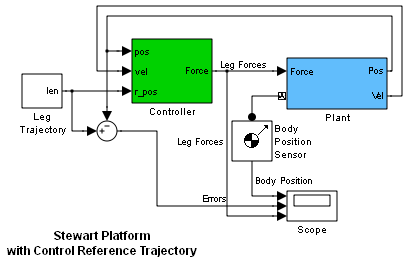

Stewart Platform with Control Reference Trajectory
Stewart platform with predefined reference trajectory. A Stewart platform is a six-degree-of-freedom machine for precise positioning and orienting. It consists of a top plate connected to a fixed base through six parallel legs. By extending or shortening the legs and swiveling them on a set of universal joints, the plate's original six degrees of freedom are reproduced with greater stability and precision.
The model is separated into a plant subsystem, the Stewart platform along with necessary actuators and sensors, and a controller subsystem that guides the platform through a predefined motion profile with actuation signals. The controller keeps the actual motion close to the reference motion via sensor-actuator feedback.
